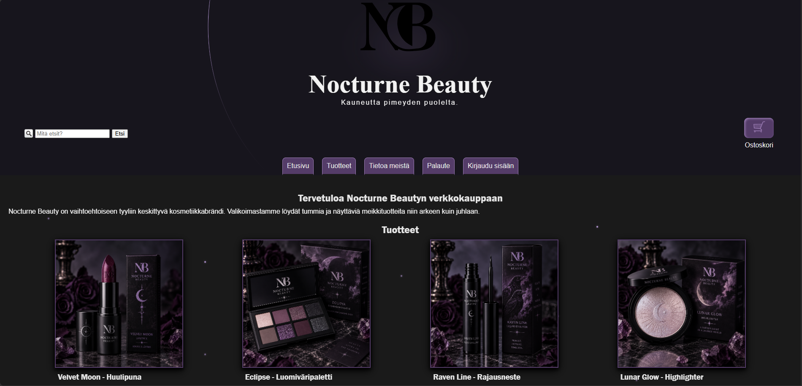
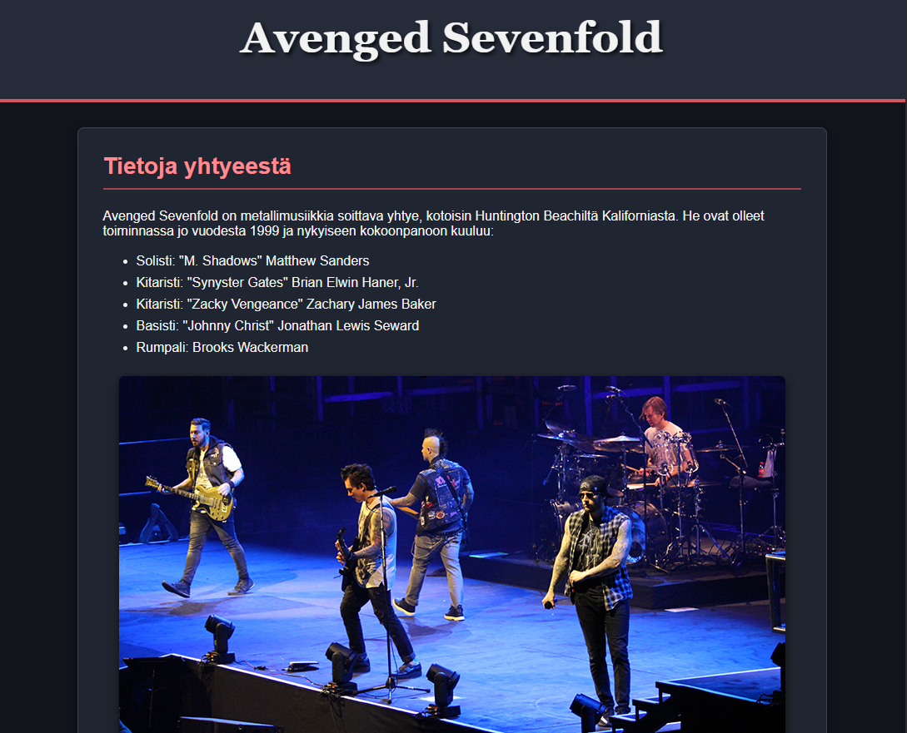

Nocturne Beauty
A fictional makeup brand website created using HTML and CSS.
View source codeAlso known as Rebella or Katanakana
Welcome to my portfolio! I'm an ICT student exploring software development, web design and the possibilities of programming.
Explore my projectsMy name is Janina, but my friends know me as Rebella.
I am a 29-year-old software development student from Finland, and I study at a Vocational college.
I love learning new things, and software development has been a long-time dream of mine.
I am also a mother to one silly little boy. In my free time, I play video games and occasionally livestream games on Twitch.
Here you can explore some of my work.

A fictional makeup brand website created using HTML and CSS.
View source code
A website about the band Avenged Sevenfold, created as an HTML and CSS exercise.
View source codeBuilding websites using HTML and CSS, practising responsive layouts, styling, navigation and visual design. Learning to create functional, user-friendly websites through practical projects.
Currently learning Python through the University of Helsinki's Python MOOC. Practising variables, conditionals, loops and string manipulation.
Learning version control using Git and GitHub. Practising cloning repositories, committing changes and managing project files across different computers.
Find me on GitHub!
Visit my GitHub